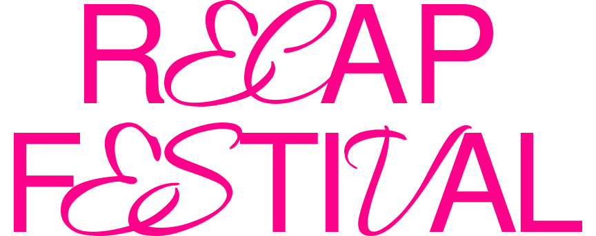

PUSHPULLDOOR
RECAP FESTIVAL은 2023년 출범하는 크리에이티브 코딩 그룹 PUSHPULLDOOR(여닫이문, 개폐
문)의 해커톤 행사의 섹션중 하나로, 지난 PUSHPULLDOOR의 행적을 돌아보고 그를 바탕으
로 목표를 정의하며, 본 행사의 프로그램 일정을 소개하는 소개사이기도 합니다.
WORKS
| 17-10C29 | 아름다운 세레나데 |
|---|---|
| 17-10C30 | Good Morning, 좋은 아침 |
| 17-10C31 | 밀고 당기는 혹은 열고 닫는 |
| 17-10C32 | 스크래치로 가까워지는 알고리즘 설계 |
| 17-10C33 | 나의 첫 번째 웹 명함 |
| 17-10C34 | 웹 소개서: 저를 소개합니다. |
| 17-10C35 | 시리야, 지금 날씨 어때? |
| 17-10C36 | 날씨로 알아보는 API의 개념 |
| 17-10C37 | 그림 그리며 알아보는 이벤트 리스너 |
| 17-10C38 | 또 다른 음악을 만나다. |
| 17-10C39 | 아디오스, 리캡 페스티벌! |